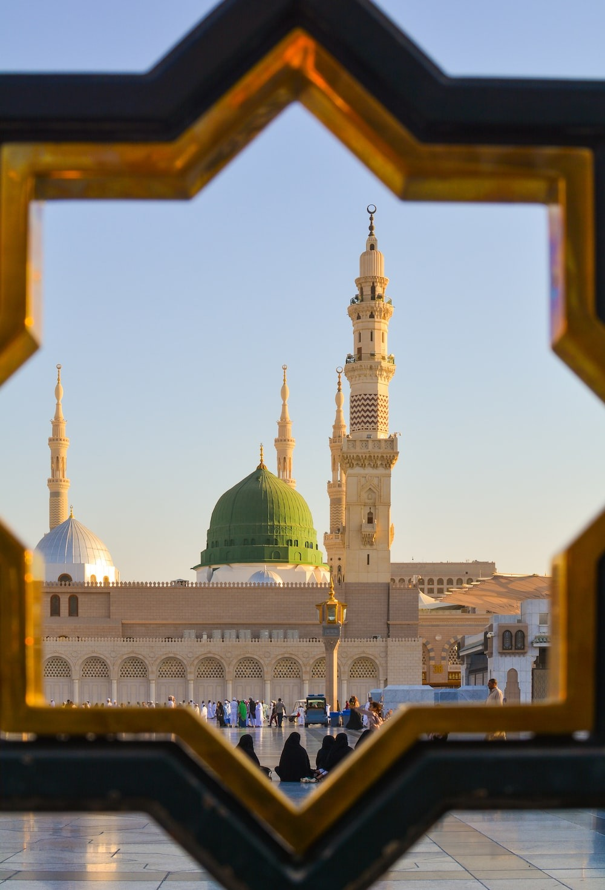

🕋 The Holy Quran 🕋

Al-Fatiha - The Opening
Al-Baqarah - The Cow
Al-Imran - The Family Of Imran
An-Nisa - The Women
Al-Maidah (the Table)
Al-An'am (the Cattle)
Al-A’raf (the Heights)
Al-Anfal (the Spoils of War)
At-Taubah (the Repentance)
Yunus (Yunus)
Hud (Hud)
Yusuf (Yusuf)
Ar-Ra’d (the Thunder)
Ibrahim (Ibrahim)
Al-Hijr (the Rocky Tract)
An-Nahl (the Bees)
Al-Isra’ (the Night Journey)
Al-Kahf (the Cave)
Maryam (Maryam)
Ta-Ha (Ta-Ha)
Al-Anbiya’ (the Prophets)
Al-Haj (the Pilgrimage)
Al-Mu’minun (the Believers)
An-Nur (the Light)
Al-Furqan (the Criterion)
Ash-Shu’ara’ (the Poets)
An-Naml (the Ants)
Al-Qasas (the Stories)
Al-Ankabut (the Spider)
Ar-Rum (the Romans)
Luqman (Luqman)
As-Sajdah (the Prostration)
Al-Ahzab (the Combined Forces)
Saba’ (the Sabeans)
Al-Fatir (the Originator)
Ya-Sin (Ya-Sin)
As-Saffah (Those Ranges in Ranks)
Sad (Sad)
Az-Zumar (the Groups)
Ghafar (the Forgiver)
Fusilat (Distinguished)
Ash-Shura (the Consultation)
Az-Zukhruf (the Gold)
Ad-Dukhan (the Smoke)
Al-Jathiyah (the Kneeling)
Al-Ahqaf (the Valley)
Muhammad (Muhammad)
Al-Fat’h (the Victory)
Al-Hujurat (the Dwellings)
Qaf (Qaf)
Adz-Dariyah (the Scatterers)
At-Tur (the Mount)
An-Najm (the Star)
Al-Qamar (the Moon)
Ar-Rahman (the Most Gracious)
Al-Waqi’ah (the Event)
Al-Hadid (the Iron)
Al-Mujadilah (the Reasoning)
Al-Hashr (the Gathering)
Al-Mumtahanah (the Tested)
As-Saf (the Row)
Al-Jum’ah (Friday)
Al-Munafiqun (the Hypocrites)
At-Taghabun (the Loss & Gain)
At-Talaq (the Divorce)
At-Tahrim (the Prohibition)
Al-Mulk – (the Kingdom)
Al-Qalam (the Pen)
Al-Haqqah (the Inevitable)
Al-Ma’arij (the Elevated Passages)
Nuh (Nuh)
Al-Jinn (the Jinn)
Al-Muzammil (the Wrapped)
Al-Mudaththir (the Cloaked)
Al-Qiyamah (the Resurrection)
Al-Insan (the Human)
Al-Mursalat (Those Sent Forth)
An-Naba’ (the Great News)
An-Nazi’at (Those Who Pull Out)
‘Abasa (He Frowned)
At-Takwir (the Overthrowing)
Al-Infitar (the Cleaving)
Al-Mutaffifin (Those Who Deal in Fraud)
Al-Inshiqaq (the Splitting Asunder)
Al-Buruj (the Stars)
At-Tariq (the Nightcomer)
Al-A’la (the Most High)
Al-Ghashiyah (the Overwhelming)
Al-Fajr (the Dawn)
Al-Balad (the City)
Ash-Shams (the Sun)
Al-Layl (the Night)
Adh-Dhuha (the Forenoon)
Al-Inshirah (the Opening Forth)
At-Tin (the Fig)
Al-‘Alaq (the Clot)
Al-Qadar (the Night of Decree)
Al-Bayinah (the Proof)
Az-Zalzalah (the Earthquake)
Al-‘Adiyah (the Runners)
Al-Qari’ah (the Striking Hour)
At-Takathur (the Piling Up)
Al-‘Asr (the Time)
Al-Humazah (the Slanderer)
Al-Fil (the Elephant)
Quraish (Quraish)
Al-Ma’un (the Assistance)
Al-Kauthar (the River of Abundance)
Al-Kafirun (the Disbelievers)
An-Nasr (the Help)
Al-Masad (the Palm Fiber)
Al-Ikhlas (the Sincerity)
Al-Falaq (the Daybreak)
An-Nas (Mankind)